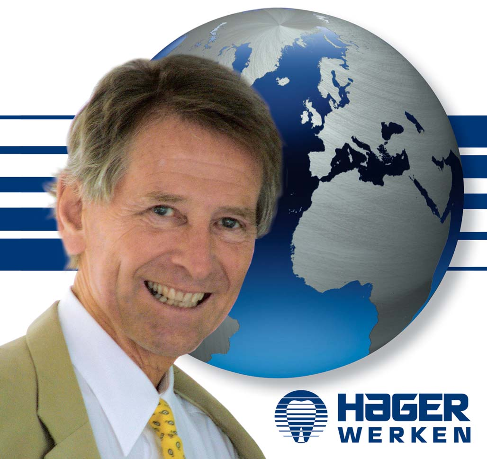
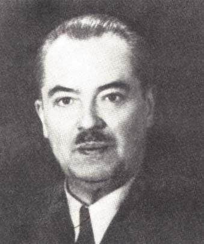
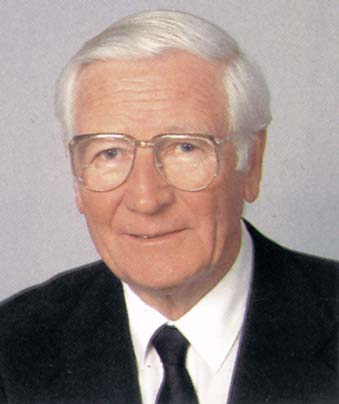
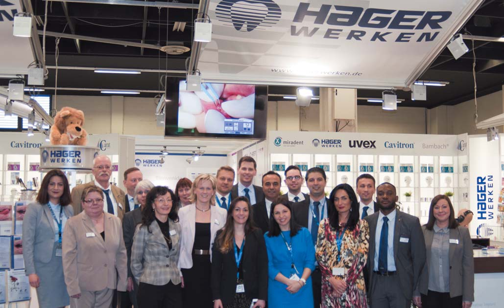
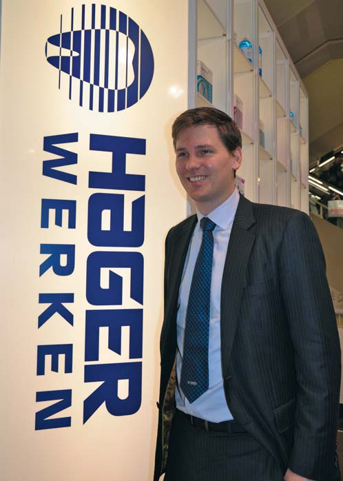
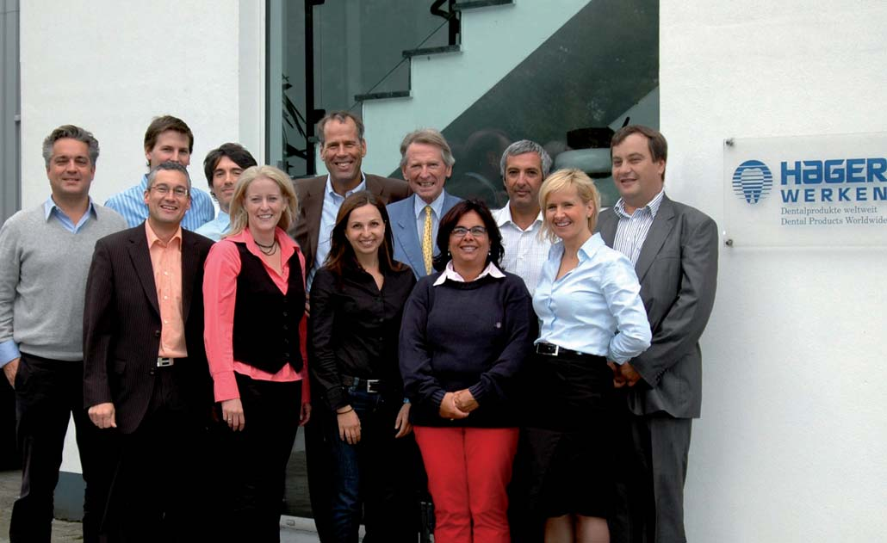

Вітальня · журнал «ДентАрт» 2017 №1
Міхаель Хагер: «Уміти дивитися в майбутнє і робити його сьогоденням»

Інструментами й матеріалами фірми «Хагер і Веркен» користуються у своїй роботі сотні тисяч стоматологів світу. І сьогодні у Вітальні «ДентАрта» — один із представників династії Хагерів, що створила цю компанію, — Міхаель Хагер. Нині дуже популярні історії успіху тих чи інших особистостей, компаній. Наша розмова теж — про історію успіху. І відповідальності. І вміння дивитися в майбутнє і робити його сьогоденням.
«Приємно усвідомлювати, що наша компанія була і залишається в мейнстрімі всіх важливих нововведень у стоматології»
— Шановний пане Хагер, Ваша компанія — яскравий приклад успішної діяльності династії промисловців. Ви представник третього покоління Хагерів і очолювали раніше компанію, що випускає продукцію, затребувану стоматологами у всьому світі. Нині біля керма компанії Патрік Хагер, Ваш син. Сімейність дуже характерна для стоматології. Але виявляється, і у виробництві матеріалів для стоматології сімейна спадковість не зайва. Розкажіть про історію компанії, Ваших предків, які заснували її, і свій шлях у «Хагер і Веркен».
— Історія компанії «Хагер і Веркен» безпосередньо пов'язана з історією стоматології... Майже 300 років тому французький лікар П'єр Фошар видав першу наукову книгу зі стоматології. На рубежі 1860-1870 років з'явилося знеболювання пацієнта при операціях. У цей же час була розроблена бормашина, яку приводив у рух ногою зубний лікар і в якій обороти великого нижнього колеса передавалися на шланг із закріпленим на кінці наконечником зі звичайним зубним бором.
Розробка нинішнього зубного бора — мабуть, найважливішої речі в руках стоматолога — відбулася на початку 1900 року. І ось у 1912 році Ервін Хагер, мій двоюрідний дідусь, разом з таким собі паном Майсингером заснував у Дюссельдорфі фабрику з виготовлення зубних борів, яка сьогодні відома в усьому світі. З цієї фірми Ервін Хагер, однак, вийшов приблизно 1926 року і разом зі своїм племінником Едгаром Хагером заснував низку депо стоматологічного обладнання в Німеччині. Помер Ервін Хагер 1956 року.
Фірма «Хагер і Веркен» у нинішньому вигляді заснована 1946 року і розпочала свою діяльність тої тяжкої післявоєнної пори з виробництва захисних серветок та автоклавів. Тоді ще широко застосовувалися каучукові протези, які пізніше були замінені штучними зубними протезами з базисом рожевого кольору, доповненими фарфоровими зубами. У середині 1950-х років почалося потужне просування пластмасових штучних зубів замість фарфорових, тому що вони були просто зручніші для пацієнта. Фірма «Хагер і Веркен» в той час імпортувала пластмасові зуби зі Сполучених Штатів, ці зуби отримали високу оцінку стоматологів і стали швидко поширюватися на ринку. Відтак компанія «Хагер і Веркен» визначила лейтмотив своєї діяльності — постачання новітніх розробок для стоматологів і техніків зі всього світу на німецький ринок, а також їх поширення в європейські країни. Щоб успішно здійснювати цю мету, потрібно бачити тенденції розвитку галузі, іншими словами, уміти дивитися в майбутнє і робити його сьогоденням.
У 1967 році компанія «Хагер і Веркен» представила першу одноразову ін'єкційну голку на ринку — Міраджект, яка і сьогодні імпортується з Японії від найбільшого світового виробника. Для цього вже тоді використовувалися голки з благородної сталі, і вони були настільки тонкими і гострими, що швидко витіснили з повсякденної практики голки багаторазового використання.
Наприкінці 1950-х років найбільша англійська фірма-виробник Амальгамейтд запропонувала і продемонструвала на стоматологічній виставці першу високошвидкісну повітряну турбіну. Пізніше зі Сполучених Штатів Америки було доставлено і встановлено для ґрунтовного тестування в одному з університетів перший ультразвуковий прилад Кавітрон, який застосовується для видалення зубних відкладень.
На початку 1960-х років я, Міхаель Хагер, племінник Едгара Хагера, узяв на себе управління компанією «Хагер і Веркен», і паралельно разом з дядьком Едгаром Хагером ми працювали над розширенням мережі філій в основних містах Німеччини фірми «Ервін Хагер Дентал Депо».
Фірма «Хагер і Веркен» розпочала виробництво одноразових пластмасових ложок Міратрей з ретенційними елементами, виготовляли також ретрактори Спандекс, пістолети для амальгами і широку лінійку власних продуктів для профілактики: інтердентальні зубні щітки, монопучкові зубні щітки, дитячі зубні щітки у формі кільця. Увесь цей асортимент можна бачити і сьогодні під торговим знаком «Мірадент» як комплексну програму стоматологічної салонної косметики та лікарських засобів для домашнього догляду за зубами, яку можна знайти як на складах стоматологічних матеріалів для професіоналів, так і в аптеках для придбання самими пацієнтами.

Ервін Хагер.

Едгар Хагер.
Величезну популярність здобула також ідея Щасливого Ранку — Happy Morning — недорогої, просоченої зубною пастою одноразової зубної щітки для пацієнта, який хотів би почистити зуби безпосередньо перед оглядом стоматолога. Уся ця продукція поставлялася з головного штабу компанії у м. Дуйсбурзі, а також через засновану 1975 року американську дочірню компанію Хагер Ворлдвайд, пізніше до них додалися власні дочірні компанії у Польщі, Китаї, Гонконзі, Росії, Хорватії і т. д.
У сфері зуботехнічних лабораторій було реалізовано сотні тисяч середньоанатомічних артикуляторів Атомік, а також багато практичних новинок, які стали сьогодні буденністю, усі вони просто не можуть бути тут перераховані.
Який він, наш професійний світ, сьогодні? Починаючи з 1950 року, і у світі, і в стоматології відбулися величезні зміни. Спочатку в кожну практику увійшов рентгенівський апарат, завдяки якому стоматолог міг точніше встановити діагноз. Далі почалася розробка стоматологічних установок для препарування аж до повітряних турбін з кількістю обертів до 300000 за хвилину. Потім прийшло складне зубне протезування, включаючи телескопічні коронки і комбіновані мости. А в останні десятиріччя стоматологи наважилися на те, щоб імплантувати в кістку високоякісні титанові імплантати, і це мало наслідком те, що пацієнти, які раніше не могли жувати повноцінно, тепер змогли знову зазнати цього незрівнянного відчуття... Приємно усвідомлювати, що наша компанія була і залишається в мейнстрімі всіх важливих нововведень у стоматології.

Команда «Хагер і Веркен» — справжні професіонали!
«Технічний прогрес дозволяє стоматологові сповна реалізувати свій потенціал як лікаря, так і художника»
— Ми живемо в епоху гіперцифризації, і часом здається, що руки стоматолога, його майстерність відсуваються на задній план, а на перший план виходить оснащеність стоматологічної клініки суперсучасним програмним забезпеченням. Що буде вирішальним у майбутньому — талант стоматолога як майстра, художника чи талант програміста і комп'ютеризація клініки?
— Фактом є те, що стоматологи, зубні техніки, а також усі професіонали, котрі належать до стоматологічної галузі, — виробничники, розробники, програмісти, менеджери з продажу і т. д. — мають можливість працювати в дуже сприятливій сфері сучасної стоматології. І не тільки тому, що кожен стоматолог, який відновлює жувальну функцію пацієнта, дарує йому красивий вигляд і можливість щасливо усміхатися, сам відчуває радість і задоволення, як і всі, хто до цього причетний, але ще й тому, що технічний прогрес дозволяє талановитому лікареві сповна реалізувати свій потенціал з його лікарською та креативною складовою, бо стоматолог — і лікар, і особистий консультант, і художник, і скульптор. Умови роботи в ультрасучасному стоматологічному кабінеті, які надають широкий спектр діагностичних можливостей і дозволяють моделювати імідж, винахідливі і високотехнологічні. Але це не витісняє того фундаментального навику, коли стоматолог за допомогою звичайного бора видаляє глибокий карієс і надає допомогу пацієнтові з гострим болем.
Будучи підприємцем у молоді роки, я сам пропрацював рік у США в той час, коли президентом був Джон Ф. Кеннеді. Я відвідував багато університетів і галузевих виставок, де постійно перебуваєш у контакті з професіоналами різних стоматологічних профілів. Так само було і під час мого шестимісячного перебування у Великобританії, під час більш ніж однорічної діяльності у Франції та річної — у Швейцарії. У віці 77 років я і сьогодні все ще із задоволенням відвідую виставки, конгреси в Італії, Іспанії, Франції, Скандинавії і т. д., а також за океаном.
Я вдячний Богові, що від свого батька та мого діда, які також керували машинобудівною фірмою, мені передалися управлінські здібності, а від матері — легкість у засвоєнні мов. Мій син Патрік також провів рік у США і рік в Аргентині, він теж вільно володіє трьома мовами.
Основну активність нашої компанії можна побачити у виробництві одноразових гігієнічних виробів. Цікаво, що в далекому 1960 році нас висміяли за слова, що кожен пацієнт радіє одноразовій ін'єкційній голці і що лікар, який носить маску, захищає самого себе. Тепер усе це — невід'ємні атрибути щоденної практики.
Уже в 1965-1970 роках ми продали майже 10 000 радіохірургічних приладів, які завдяки високій частоті замінили болючий електрокоагулятор, що використовувався до цього. Сьогодні це наш компактний СВЧ прилад hfSurg, який користується у стоматологів великою популярністю.

Відповідальність керувати фірмою, яку знають стоматологи всього світу, сьогодні лежить на плечах Патріка Хагера.
— У 2000 році під час ювілейного конгресу Всесвітньої федерації стоматології (FDI) ми розмовляли з Вами, пропонували зареєструвати в Україні деякі продукти «Хагер і Веркен». Ви тоді відповіли, що мине 10 років, Україна буде в Євросоюзі і реєстрація не запотребиться зовсім. Відтоді минуло вже 16 років, але Україна ще не в Євросоюзі і шлях продуктів залишився таким самим складним і довгим. Які, на Ваш погляд, шляхи вирішення проблеми доступу товарів до стоматологів різних країн?
— На жаль, перешкод для доступу в обіг інноваційних продуктів чимало. Ситуація істотно ускладнюється з боку держави правилами допуску матеріалів та обладнання у медичну практику, внаслідок чого необхідний прогрес на благо пацієнта сповільнюється і зазнає перешкод, іноді навіть стає неможливим. Залежно від держави, система відрізняється. Найліпше йдуть справи у тих, хто живе в невеликих країнах без потужного бюрократичного апарату.
— Що допомагає Вам знайти друге дихання після особливо напружених буднів? Ваші хобі?
— Щоб у щоденній діяльності і спілкуванні з людьми залишатися щирим і креативним, великою підмогою для відновлення балансу є спорт, і я радий, що багато стоматологів грають у теніс. Я сам у віці 77 років катаюся на лижах, граю в гольф і теніс.
«Найбільшою турботою є те, щоб збереглася свобода»
— Що б Ви хотіли побажати стоматологам — читачам журналу «ДентАрт»?
— Почувати себе вільними людьми і усміхатися! Кілька слів про усмішку. На сучасних світлинах і картинах найчастіше зображені широко усміхнені люди з красивими зубами. Але коли ходиш по музеях і бачиш олійні полотна наших попередників, то на їхніх картинах усмішки зовсім відсутні. У людей минулих століть були гнилі зуби, оскільки рівень стоматології був дуже низьким, як і рівень самих технологій.
І кілька слів про Свободу. Ми, які після Другої світової війни змогли побудувати наше життя на засадах свободи, пізнали щастя і сподіваємося, що це щастя також стане надбанням і країн Східної Європи. Найбільшою турботою є те, щоб збереглася свобода — це й загальна свобода, але також і особиста свобода, щоб кожен міг робити те, до чого має покликання, і щоб держава відчувала себе слугою своїх громадян, а не брала на себе занадто багато.
— Редакція «ДентАрта» дякує за інтерв'ю і бажає успіхів «Хагер і Веркен» у нашій спільній справі — турботі про красиву усмішку, стоматологічне здоров'я сучасників. Щоб люди ХХІ століття, позуючи художникам і фотографам, усміхалися на всі тридцять два!

Міхаель Хагер, Ольга Зайферт і лікарі клініки-студії «Аполлонія» Сергій Радлінський та Ксенія Лазарєва на Міжнародній виставці у Кельні. 2015 р.

Співробітників «Хагер і Веркен», відповідальних за експорт, знають у багатьох країних.
Розмовляв Сергій Радлінський
Фото з архіву родини Хагерів